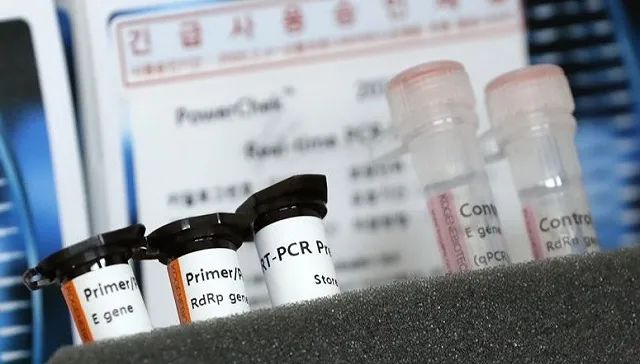
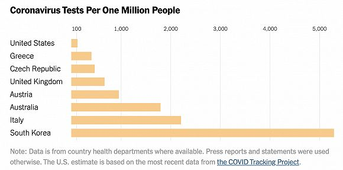

美国修改检测标准，提醒民众备足物资
原文链接 备份链接 图片来源：Wikimedia Commons 记者：肖恩 “ 有专家认为，检测人数少是美国目前确诊病例不多的原因。 ” 疑似首例新冠肺炎社区传播病例让美国提高了警惕，疾病控制与预防中心（CDC）也为此修改检测标准。但 …

图片来源：Yonhap
记者：潘金花
“
在韩国，每200人中就有1人接受了新冠病毒检测。
”
“我们要向所有国家传递一个简单的信息：检测，检测，再检测。”
3月16日，世界卫生组织总干事谭德塞在日内瓦发出加强检测的呼吁。“预防感染和拯救生命的最有效方法就是打破传播链。要做到这一点，就必须检测和隔离，”他说，“谁都不可能蒙住双眼救火。如果不知道谁被感染了，就无法阻止这场大流行。”
根据美国约翰斯·霍普金斯大学的统计数据，截至北京时间18日17时，全球新冠肺炎累计确诊病例数已达到19.8万例。然而目前，仍有不少国家面临着“检测难”的问题。
截至北京时间17日22时30分，在非洲的54个国家中，已有超过一半报告了新冠肺炎确诊病例，达30国。而据彭博新闻社16日报道，截至上周末，仅有36个非洲国家具备新冠病毒检测能力，若非洲出现大规模感染事件，各国的检测实验室仍有可能被“压垮”。
发达国家的检测能力同样“跟不上”。如瑞士就已从上周开始，优先为高风险和出现严重症状的人群提供检测，轻症人群则被建议留在家中、自行隔离，以缓解有关医疗机构及实验室的压力。
美国的检测速度也远远落后于其他国家。根据美国疾控中心（CDC）官方网站公布的最新数据，截至3月16日，CDC和地方公共卫生实验室仅检测了约3.2万份样本，但当天，美国的累计确诊病例已突破4000例（截至18日17时已近6500例）。
据界面新闻此前报道，美国检测“迟缓”，主要与条件严苛、工具不足有关。《纽约时报》17日指出，在美国，每100万人中仅有约125人接受了检测，远低于其他公布了相关数据的国家。据了解，截至上周末，美国的检测都是手动完成的，各个实验室每天仅能进行40至60次检测。

每100万人口中接受检测的人数，从下到上为：韩国、意大利、澳大利亚、奥地利、英国、捷克、希腊、美国。来源：纽约时报
与美国不同，意大利早在疫情爆发初期，就已在伦巴第大区铺开了检测工作，只要是曾与确诊患者接触过的人，无论有无症状，都需要接受检测，这也部分解释了为何意大利的确诊病例数会增长得如此之快。
据了解，在2月底仅有500余人确诊时，意大利就已完成了一万多次检测。在该国一些小镇，大规模的检测也帮助切断了传播链。在靠近威尼斯的沃镇，地方政府2月下旬就对全体居民、约3300人进行了检测，感染者占比3%，无论有无症状均被隔离，10天后的第二轮检测显示，感染率已降至0.3%。
而在海外，病毒检测力度最大的国家无疑是韩国。截至18日零时，韩国累计确诊8413例新冠肺炎病例，连续四天单日新增病例数低于100例。尽管仍存在零星的聚集性感染事件，但在确诊病例数破千的海外国家中，韩国是唯一一个呈现出明显放缓趋势的国家。
从2月4日首款检测试剂盒获批至今，韩国累计已给27万人进行了病毒检测，即每200人中，就有1人接受了检测。据《华尔街日报》16日报道，韩国一共在境内设置了633个筛查点，包括“免下车”筛查诊所，以及在爆发疫情的建筑物前临时设置的诊所等，日检测能力达2万人。
在韩国，只要是有相关接触史或是有医生的建议，接受检测都是免费的，完成取样仅需10分钟。在这之后，样本会被保存在40华氏度（约4.4摄氏度）的密封容器中，运往118个实验室，由约1200名医疗专业人员完成分析，一般需要六个小时，患者通常在一天内就能获知结果。
韩国具备这样的检测能力，是吸取了2015年中东呼吸综合征（MERS）的教训。近年，韩国引入了紧急使用许可制度，缩短了药物和试剂投放市场所需的时间。此外，韩国还重新设计了紧急情况系统，在各大医院和地方保健所都配备了RT-PCR检测装置，为迅速诊断提供了基础。
现在，有“余力”的韩国企业也在给其他国家供应检测试剂盒。韩国共有四家企业获得了食品药品安全处的新冠病毒试剂盒紧急使用许可，其中包括专门生产核酸检测试剂盒的Seegene公司，该公司在本月初就已收到了30多个国家的“紧急订货请求”。
随着全球新冠肺炎病例站上20万例，各国必须加快检测的步伐。谭德塞16日说，世卫组织已向120个国家运送了近150万份试剂盒，并正与有关企业合作，以增加产量，供最需要的人使用。
中国多所高校研发的14种检测试剂盒日前也已进入欧盟市场，向意大利、英国、荷兰等11个国家供货。此前，中国已向伊朗、日本、巴基斯坦、非盟、塞尔维亚、菲律宾等国家和国家组织捐赠了上万个检测试剂盒。
未经授权 禁止转载

原文链接 备份链接 图片来源：Wikimedia Commons 记者：肖恩 “ 有专家认为，检测人数少是美国目前确诊病例不多的原因。 ” 疑似首例新冠肺炎社区传播病例让美国提高了警惕，疾病控制与预防中心（CDC）也为此修改检测标准。但 …
原文链接 备份链接 叶青武汉日记：武汉现有疑似病例1例 5830 来源：正和岛 作者：叶青 03-17正在打榜，当前第1 [ …
原文链接 备份链接 【财新网】（记者 刘登辉）作为欧洲第一个宣布全国封锁的国家，新冠疫情肆虐的意大利保卫战不断升级。截至当地时间3月16日下午6时，意大利新冠病毒感染累计确诊已达27980例，确诊病例全球第二，近三日单日新增都超过3000 …
原文链接 备份链接 “外防输入”已是当前疫情防控重中之重。海外累计确诊病例超过10万，世卫组织呼吁各国扩大监测范围。欧洲更多国家关闭边境 文 |《财经》数据研究员 徐进 图 |《财经》视觉中心 编辑 |** 郝洲** 一、北京重启小汤山 …
原文链接 备份链接 中国现有确诊病例已降至1万以下。国内已采取最严密的入境防疫检测措施。美国继续在快车道上狂奔，但基本防疫措施已经得到重视和加强 文丨《财经》数据研究员 徐进 图丨《财经》视觉中心 编辑丨郝洲 一、境外输入病例北京居首， …